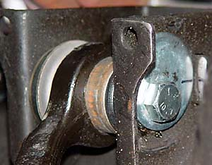
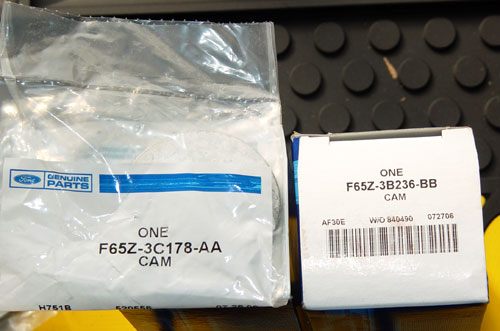
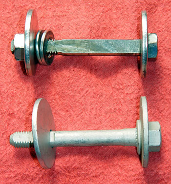

|
Cam Bolts |
|
The factory suspension cannot be adjusted for camber when the suspension is lowered. To solve this problem, cam bolts are used. The cam bolts allow the upper a-arm to come in or out as needed to set camber.
|
| You need (4) NAPA part # 264-3658 @ $15). Or, for Ford parts, you need (4) F65Z-3B236-BB cam bolts and (4) F65Z-3C178-AA cam washers. Cost is roughly the same as the NAPA parts. |
|
This photo compares the NAPA parts (top) with the Ford parts. The cams on the Ford parts are 1.4", versus 1.3" for the NAPA parts, so they allow a bit more adjustment range. Plus, after a few years of service, the d-holes in the NAPA cams were distorted, which could rob you of a few precious degrees of adjustment range. |